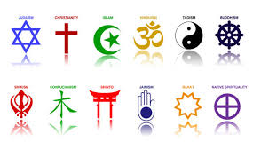

Что такое символ?
Что такое символ?
Символ — это знак, который может означать религию или слово. Если символ в последовательности
в сочетании тогда появляется новое значение, например, слова или год 2025. Буквы и цифры также являются символами.
Рабочие символы - : / ( ) = ? . + " * % & §, £$,а б в г д е ё ж з и й к л м н o п р c т у ф х ц ч ш щ ъ ы ь э ю я , 0123456789
Религиозные символы, например: Чай

Языки
Deutsch
Українська
English